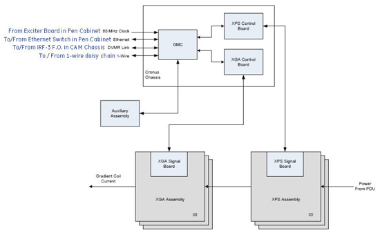

Proprietary to General Electric
Direction 5670000, Rev# 1
Optima MR450w 1.5T Service Methods
Module Version 2.0, Version Date 8/19/08
Proprietary to General Electric |
Diagnostics >> System Function >> Gradient >> Gradient Diagnostics
Diagnostics >> Hardware Location >> PGR Cabinet >> Gradient >> Gradient Diagnostics
Illustration 1: Gradient Diagnostics

The purpose of this diagnostic is to check that gradient data is successfully transmitted from SRF/TRF to XGD GMC.
This test is performed several times with different test patterns to ensure functionality.
FRUs in test:
SRF/TRF
IRF3
DVMR Link
XGD GMC
None
Illustration 2: Gradient Hammer Diagnostic Functional Block Diagram

Click [Calculate Time] to get an estimate of the time it will take to run the selected diagnostics.
Check Ethernet communication between SCP and GMC.
Check for DVMR Link errors.
SCP programs the WARP on TRF to send out test data.
TRF sends the test data to IRF3.
IRF3 transmits data to GMC via DVMR Link.
GMC verifies the data and sends the test results to SCP over Ethernet.
The SCP repeats the test several times with other test data patterns.
The diagnostic returns PASS or FAIL.
In the case of errors, you can click the 1st Error number to see the nature of the error, although we recommend you view the GE System Log to view all the errors that were recorded.
A full list of errors is available in the GE System Logs.